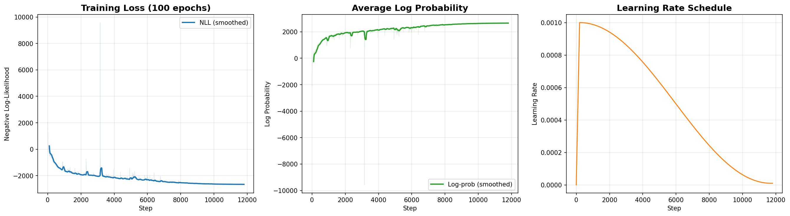
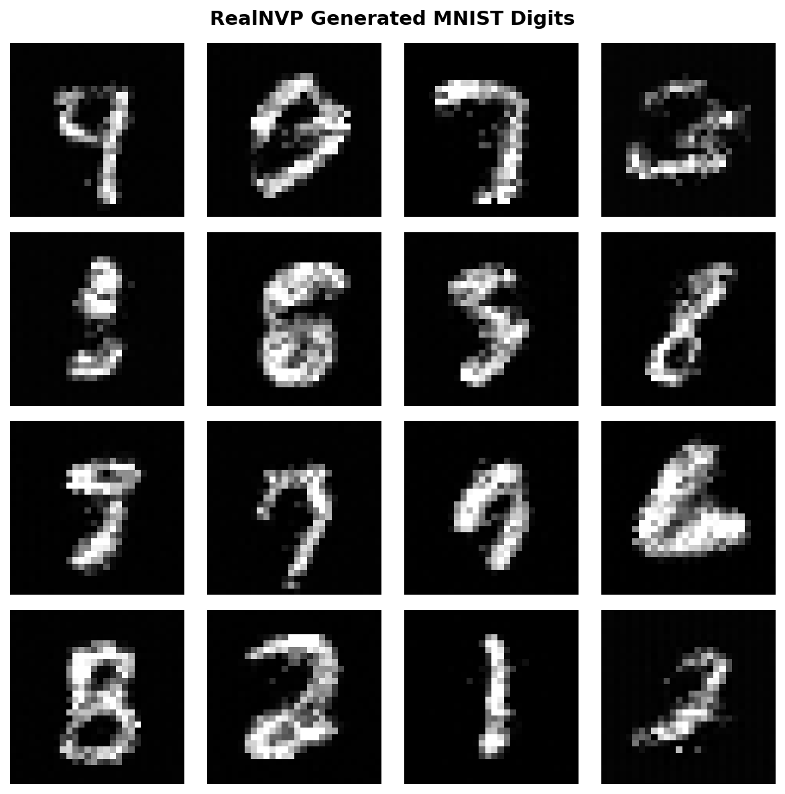

Training a Flow Model on MNIST with RealNVP¤
Level: Beginner | Runtime: ~50 minutes (GPU), ~4-5 hours (CPU) | Format: Python + Jupyter
This tutorial demonstrates how to train a RealNVP normalizing flow model using Artifex's configuration-based API. Instead of implementing flow transformations from scratch, we use Artifex's RealNVP class with RealNVPConfig and CouplingNetworkConfig for clean, production-ready training. We also use DataRax for efficient GPU-accelerated data loading.
Files¤
- Python Script:
examples/generative_models/image/flow/flow_mnist.py - Jupyter Notebook:
examples/generative_models/image/flow/flow_mnist.ipynb
Dual-Format Implementation
This example is available in two synchronized formats:
- Python Script (.py) - For version control, IDE development, and CI/CD integration
- Jupyter Notebook (.ipynb) - For interactive learning, experimentation, and exploration
Both formats contain identical content and can be used interchangeably.
Quick Start¤
# Activate Artifex environment
source activate.sh
# Run the Python script
python examples/generative_models/image/flow/flow_mnist.py
# Or launch Jupyter notebook for interactive exploration
jupyter lab examples/generative_models/image/flow/flow_mnist.ipynb
Overview¤
Learning Objectives:
- Understand why dequantization is critical for flow models
- Use Artifex's
RealNVPwithRealNVPConfigandCouplingNetworkConfig - Use
DataRaxfor efficient GPU-accelerated data loading - Configure learning rate warmup with cosine decay for stable training
- Train using negative log-likelihood (maximum likelihood)
- Generate samples from the trained flow model
- Visualize training curves with smoothing
Prerequisites:
- Basic understanding of neural networks and generative models
- Familiarity with JAX and Flax NNX basics
- Artifex installed with CUDA support (recommended)
Estimated Time: 45-60 minutes
What's Covered¤
-
Dequantization
Converting discrete MNIST pixels to continuous data for flow models
-
Model Configuration
RealNVP with 8 coupling layers and MLP networks
-
LR Schedule
Warmup + cosine decay for stable training convergence
-
Training Loop
Negative log-likelihood optimization with gradient clipping
-
Sample Generation
Generating new digits from the base distribution
-
Visualization
Training curves with smoothing and learning rate monitoring
Expected Results¤
After 100 epochs of training:
- Training time: ~50 minutes on GPU (RTX 4090)
- Final NLL: ~-2500 to -2700 (more negative is better)
- Generated samples: Clear, recognizable digits


Why These Techniques Matter¤
Before diving into the code, let's understand why we use specific techniques:
| Technique | Problem it Solves | Our Solution |
|---|---|---|
| Dequantization | Flow models require continuous data, MNIST is discrete (0-255) | Add uniform noise U(0, 1/256) to each pixel |
| 12 coupling layers | Insufficient layers limit expressiveness | More layers for better expressiveness |
| 4-layer MLPs (512 units) | Coupling networks need enough capacity | Deeper/wider networks capture complex transformations |
| LR warmup (200 steps) | Large gradients early in training cause instability | Gradual warmup prevents early divergence |
| Cosine decay | Constant LR leads to oscillation late in training | Decay allows fine-tuning as training progresses |
| Gradient clipping | Flow models can have exploding gradients | Global norm clipping to 1.0 ensures stability |
| Scale activation tanh | Unbounded scale outputs cause numerical issues | Tanh bounds scale to [-1, 1] for stability |
| JIT compilation | Python overhead slows training | nnx.jit compiles training step for GPU acceleration |
| DataRax | Inefficient CPU-based data loading | GPU-accelerated batching with JIT compilation |
Prerequisites¤
Installation¤
Step 1: Setup and Imports¤
import jax
import jax.numpy as jnp
import matplotlib.pyplot as plt
import numpy as np
import optax
from flax import nnx
from tqdm import tqdm
# Artifex imports
from artifex.generative_models.core.configuration.flow_config import (
CouplingNetworkConfig,
RealNVPConfig,
)
from artifex.generative_models.models.flow.real_nvp import RealNVP
print(f"JAX backend: {jax.default_backend()}")
print(f"Devices: {jax.devices()}")
Step 2: Configuration¤
Training configuration based on RealNVP best practices:
# Configuration (based on RealNVP best practices)
SEED = 42
NUM_EPOCHS = 100 # 100 epochs for good quality
BATCH_SIZE = 512 # Larger batch size for better GPU utilization
BASE_LR = 1e-3 # Scale LR with batch size
WARMUP_STEPS = 200 # Warmup steps
Why these values?
- 100 epochs: Sufficient for clear, recognizable digits
- Batch size 512: Better GPU utilization and stable gradients
- LR 1e-3: Higher LR scaled with batch size for faster convergence
- Warmup 200 steps: Quick warmup to stabilize early training
Step 3: Data Loading and Preprocessing¤
Flow models require continuous data. MNIST is discrete (0-255), so we apply dequantization:
import tensorflow_datasets as tfds
def load_mnist_data():
"""Load MNIST dataset."""
ds_train = tfds.load("mnist", split="train", shuffle_files=False, as_supervised=True)
train_images = []
for image, _ in ds_train:
train_images.append(np.array(image))
return np.array(train_images)
def preprocess_for_flow(images, key):
"""Preprocess MNIST for flow models: normalize, flatten, dequantize, scale."""
# Normalize to [0, 1]
images = images.astype(np.float32) / 255.0
# Flatten to (N, 784)
images = images.reshape(len(images), -1)
# Dequantization: add uniform noise
noise = jax.random.uniform(key, images.shape) / 256.0
images = images + noise
# Scale to [-1, 1]
images = (images - 0.5) / 0.5
return images
train_images = load_mnist_data()
print(f"Train: {train_images.shape}") # (60000, 28, 28, 1)
Why Dequantization?
- Flow models compute exact likelihoods using the change of variables formula
- Discrete data leads to infinite log-likelihood (delta functions)
- Adding uniform noise creates a valid continuous density
Step 4: Create RealNVP Using Artifex's API¤
Use Artifex's RealNVP class with configuration objects:
# Initialize RNGs
key = jax.random.key(SEED)
params_key, noise_key, sample_key, dropout_key = jax.random.split(key, 4)
rngs = nnx.Rngs(
params=params_key,
noise=noise_key,
sample=sample_key,
dropout=dropout_key,
)
# Coupling network config (4 hidden layers with 512 units each for better capacity)
coupling_config = CouplingNetworkConfig(
name="coupling_mlp",
hidden_dims=(512, 512, 512, 512), # 4 hidden layers with more capacity
activation="relu",
network_type="mlp",
scale_activation="tanh",
)
# RealNVP config (12 coupling layers for better expressiveness)
flow_config = RealNVPConfig(
name="realnvp_mnist",
coupling_network=coupling_config,
input_dim=784, # 28*28
base_distribution="normal",
num_coupling_layers=12, # More layers for better expressiveness
mask_type="checkerboard",
)
# Create model
model = RealNVP(flow_config, rngs=rngs)
print(f"RealNVP created: {flow_config.num_coupling_layers} coupling layers")
Artifex Model Features:
- Frozen dataclass configurations for type safety
- Configurable coupling networks with MLP architecture
- Checkerboard masking for alternating dimensions
- Normal base distribution for standard flow training
Step 5: Create Optimizer with LR Schedule¤
Use learning rate warmup with cosine decay for stable training:
# Calculate total training steps for learning rate schedule
total_steps = NUM_EPOCHS * (60000 // BATCH_SIZE)
print(f"Total training steps: {total_steps}")
# Learning rate schedule: warmup + cosine decay
lr_schedule = optax.warmup_cosine_decay_schedule(
init_value=0.0,
peak_value=BASE_LR,
warmup_steps=WARMUP_STEPS,
decay_steps=total_steps,
end_value=BASE_LR * 0.01,
)
# Optimizer with gradient clipping and LR schedule
optimizer = nnx.Optimizer(
model,
optax.chain(
optax.clip_by_global_norm(1.0),
optax.adam(lr_schedule)
),
wrt=nnx.Param
)
Why This LR Schedule?
- Warmup: Prevents large gradients from destabilizing early training
- Cosine decay: Smooth reduction allows fine-tuning without sudden jumps
- End value 1% of peak: Small LR at end for final refinement
Step 6: Training Step¤
Define the training step for maximum likelihood training:
def train_step(model, optimizer, batch):
"""Training step for RealNVP (maximum likelihood)."""
def loss_fn(model):
outputs = model(batch, training=True)
log_prob = outputs["log_prob"]
loss = -jnp.mean(log_prob) # Negative log-likelihood
return loss, {"nll": loss, "log_prob": jnp.mean(log_prob)}
(loss, metrics), grads = nnx.value_and_grad(loss_fn, has_aux=True)(model)
optimizer.update(model, grads)
return metrics
# JIT-compile training step for performance
jit_train_step = nnx.jit(train_step)
Training Objective:
- Maximize log-likelihood = minimize negative log-likelihood
log_probincludes both base distribution probability and log-determinant of transformation- Loss should decrease as model learns the data distribution
Step 7: Training Loop¤
Train the model for multiple epochs:
history = {"step": [], "loss": [], "log_prob": [], "lr": []}
train_key = jax.random.key(999)
global_step = 0
print(f"Training for {NUM_EPOCHS} epochs...")
for epoch in range(NUM_EPOCHS):
epoch_losses = []
for batch in tqdm(train_loader, desc=f"Epoch {epoch+1}/{NUM_EPOCHS}"):
train_key, dequant_key = jax.random.split(train_key)
# Preprocess: dequantize and scale
batch_processed = preprocess_for_flow(batch, dequant_key)
batch_jax = jnp.array(batch_processed)
# JIT-compiled training step
metrics = jit_train_step(model, optimizer, batch_jax)
# Record history
current_lr = float(lr_schedule(global_step))
history["step"].append(global_step)
history["loss"].append(float(metrics["nll"]))
history["log_prob"].append(float(metrics["log_prob"]))
history["lr"].append(current_lr)
epoch_losses.append(float(metrics["nll"]))
global_step += 1
avg_loss = np.mean(epoch_losses)
print(f"Epoch {epoch+1}: NLL={avg_loss:.2f}")
Training Procedure per Epoch:
- Iterate over batches from data loader
- Apply fresh dequantization noise each batch
- Compute NLL loss and update model parameters
- Track loss and learning rate for visualization
Step 8: Generate Samples¤
Generate new digits from the trained model:
n_samples = 16
generated_samples = model.generate(n_samples=n_samples)
# Denormalize from [-1, 1] to [0, 1]
generated_samples = (generated_samples * 0.5) + 0.5
generated_samples = jnp.clip(generated_samples, 0, 1)
# Reshape to images
generated_images = generated_samples.reshape(n_samples, 28, 28)
print(f"Generated {n_samples} samples")
Generation Process:
- Sample from base distribution (standard normal)
- Apply inverse transformation through all coupling layers
- Denormalize to image range
Step 9: Visualize Results¤
# Generated samples grid
fig, axes = plt.subplots(4, 4, figsize=(8, 8))
for i, ax in enumerate(axes.flatten()):
if i < len(generated_images):
ax.imshow(np.array(generated_images[i]), cmap='gray')
ax.axis('off')
plt.suptitle("RealNVP Generated MNIST Digits", fontsize=14, fontweight="bold")
plt.tight_layout()
plt.savefig("flow_samples.png", dpi=150, bbox_inches="tight")
Experiments to Try¤
- Quick Training: Fewer epochs for faster iteration
- Smaller Model: Trade quality for speed
coupling_config = CouplingNetworkConfig(
hidden_dims=(256, 256, 256), # Smaller networks
)
flow_config = RealNVPConfig(
num_coupling_layers=8, # Fewer layers
)
- Lower Learning Rate: More stable, slower convergence
- Different Base Distribution: Explore other priors
- Smaller Batch Size: Less memory usage
Troubleshooting¤
NaN Loss¤
- Solution: Reduce learning rate to
1e-4or5e-5 - Check: Ensure dequantization is applied (data should be continuous)
- Fix: Increase gradient clipping threshold or warmup steps
Poor Sample Quality¤
- Solution: Train for more epochs (100+)
- Check: Loss should decrease consistently over training
- Fix: Increase model capacity (more layers, wider networks)
Training Plateau¤
- Solution: Try different learning rate schedule
- Check: Learning rate should still be non-zero
- Fix: Increase batch size for smoother gradients
Out of Memory¤
- Solution: Reduce batch size or model size
- Check: MNIST 784-dim flattened images + 8 coupling layers fits in 8GB+
- Fix: Use gradient checkpointing for large models
Summary¤
In this tutorial, you learned:
- Artifex Flow API: Using
RealNVPwith configuration classes - Dequantization: Why and how to preprocess discrete data for flows
- LR Scheduling: Warmup + cosine decay for stable training
- Training: Maximum likelihood via negative log-likelihood
- Generation: Sampling from trained flow model
Next Steps¤
Related Examples¤
-
Compare flow with GAN approach on 2D data
-
Learn about diffusion models for image generation
-
Compare with variational autoencoders
-
Glow, Neural Spline Flows, and more
Documentation Resources¤
- Flow Concepts: Deep dive into flow theory
- Flow User Guide: Advanced usage patterns
- Flow API Reference: Complete API documentation
Papers¤
- Density Estimation using Real-NVP (Dinh et al., 2016)
-
RealNVP paper: https://arxiv.org/abs/1605.08803
-
Glow: Generative Flow with Invertible 1x1 Convolutions (Kingma & Dhariwal, 2018)
-
Glow paper: https://arxiv.org/abs/1807.03039
-
Neural Spline Flows (Durkan et al., 2019)
- NSF paper: https://arxiv.org/abs/1906.04032
Congratulations! You've successfully trained a Flow model using Artifex's RealNVP API!